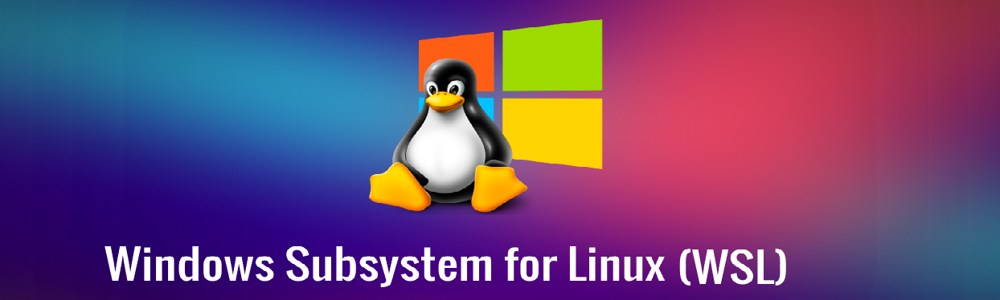

wsl --list --online
Instalación:
wsl --install <NombreDistribucion> [--name <NombrePersonalizado>]
Ejemplo:
wsl --install Ubuntu-24.04 --name MyUbuntu
Esto te permite tener varias versiones o entornos con distintos nombres.
wsl -d <NombreDistribucion>
Ejemplo:
wsl -d MyUbuntu
wsl --list --verbose
wsl --unregister <NombreDistribucion>
Ejemplo:
wsl --unregister MyUbuntu
Al iniciar WSL por primera vez con una distribución instalada, el sistema te pedirá:
Cámbiate a root primero:
su
Luego crea el usuario y añade a sudo:
usermod -aG sudo nombre_usuario
Opcional:
echo '%sudo ALL=(ALL:ALL) ALL' >> /etc/sudoers
sudo apt update && sudo apt upgrade -y
sudo apt install -y curl wget git sudo
Desde PowerShell:
wsl -d MyUbuntu --cd "D:\Proyectos"
Error:
Error de inicio de sesión: el usuario no tiene permisos para el tipo de inicio de sesión solicitado en el equipo.
Código de error: Wsl/Service/CreateInstance/CreateVm/HCS/0x80070569
Causa: Este error suele aparecer cuando el servicio de virtualización no está habilitado correctamente o no se poseen los permisos necesarios.
Solución: Ejecuta PowerShell como administrador y lanza estos comandos uno a uno:
Get-Service vmcompute | Restart-Service
Get-Service vmcompute | Restart-Service reinicia el servicio de máquinas virtuales
gpupdate /force
Salida:
Actualizando directiva...
La actualización de la directiva de equipo se completó correctamente.
Se completó correctamente la Actualización de directiva de usuario.
gpupdate /force actualiza las políticas de grupo, aplicando cambios de permisos
Después de esto, reinicia tu equipo si te lo pide, y vuelve a intentar iniciar la distribución WSL.